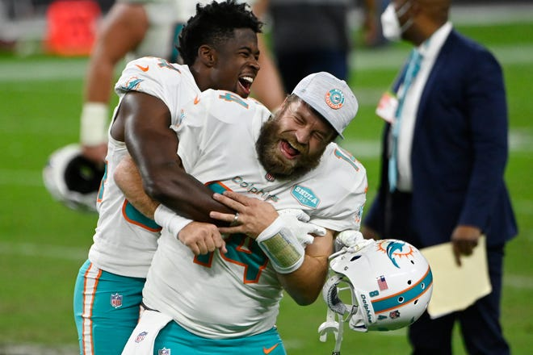
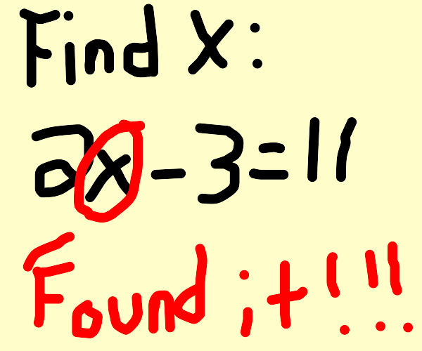

Day 1
- It's nice to be important, but it's more important to be nice
- The most important thing is sincerity, once you can fake that, you've got it made
- What's the difference between a fish and a piano, You can tune a piano, but you can't tune a fish
- Dolphins-vs-Raiders Fitzmagic

Day 2
- How do you think the un-thinkable, With an ith-burg
- Mexican magician counted: uno, dos, an vanished without a tres
- Why can cats jump higher than houses? Mostly because of the cat's powerful legs, and also because houses can't jump
- When a door not a door?, When it's ajar
- When is a car not a car?, When it turns into a driveway
- If I had to describe myself in one word it would be: bad at following directions
- What did the cat order at the sofa shop? A scratch-pad.
Day 3
- What's a light-year?, same as a regular year, just less calories
- 
- Why didn't the wither go outside?It was bad to the bone (and had no clothes)
- Proven funniest joke ever, video
Day 4
- Why was the bee's hair messy?, It used a honey-comb.
- What did one wall say to the other wall?, Meet you in the corner.
- Why did the potato farmer plant with a steamroller? He was planting mashed-potatoes.
- What did the fly say to the spider web? I'm stuck on you
- Why did the actor fall through the floorboard? He was going through a stage.
Day 5
- What did the athlete say to the ketchup bottle? Try to ketch-up
Day 6
- A cowboy arrived in town on Friday, and left 3 days later on Friday. How did he do it? He had a horse named Friday.
- Why was Jupiter jealous of the sun? It's too small to ever be a star
Day 7
- What do you call a pig that does karate? A pork-chop
Day 8
- Why was 6 afraid of 7? Because 7 ate 9.
- How can you tell that a vampire is sick? By his coffin'
- What do you call a dinosaur pig? Jurrasic pork
Day 9
- Why did the boy put candles on a toilet? He wanted a birthday potty
- What has ears but can't hear? Corn
- What did one traffic light say to the other? Don't look I'm changing
- What does a tree and a dog have in common? Bark
Day 10
- How did the tree join the internet? He logged on